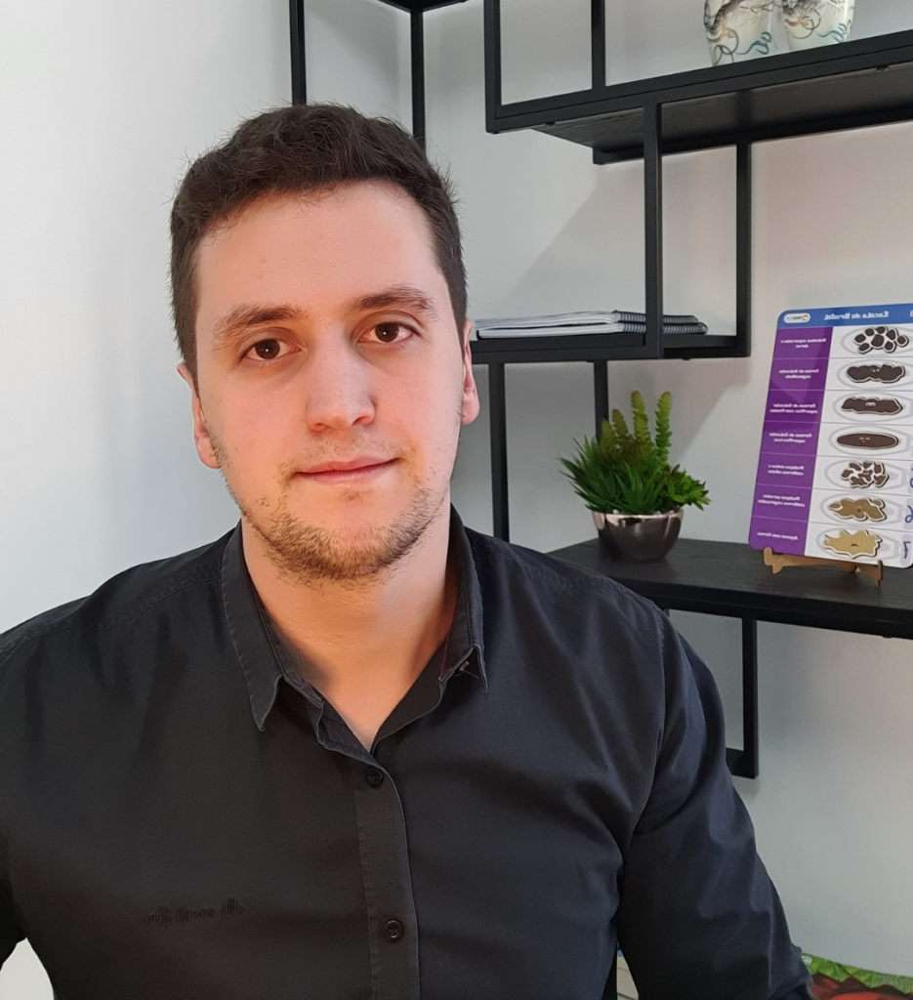

Conquiste emagrecimento, ganho de massa ou alta performance esportiva com acompanhamento baseado em exames metabólicos reais (InBody e Calorimetria Indireta) no bairro Santo Agostinho.

Ajustes práticos pensados para a sua rotina no dia a dia, respeitando sua vida social e seus alimentos preferidos.
Plano adaptado à sua rotina real com escolhas conscientes e alimentos acessíveis do dia a dia, sem mudanças bruscas, dietas punitivas ou ingredientes caros.
Estratégias nutricionais focadas em acelerar a recuperação muscular e potencializar os resultados de praticantes de corrida, luta, natação e musculação.
Ajustes alimentares direcionados que impactam diretamente a sua energia diária, reduzem quadros de indisposition, fortalecem a imunidade e melhoram o sono.
Tecnologia avançada de diagnóstico corporal integrada ao acompanhamento nutricional presencial em Belo Horizonte.
Atendimento focado em emagrecimento, hipertrofia ou saúde. O plano alimentar é montado na hora com você, considerando rotina e preferências, sem suplementos desnecessários e com suporte pós-consulta ativo para readequações.
Exame de alta precisão realizado no consultório para mapear massa magra, gordura e água corporal, permitindo um direcionamento nutricional exato.
Medição precisa da taxa metabólica basal em repouso no próprio consultório, fornecendo os dados exatos de consumo calórico para calibrar sua dieta com rigor científico.
Avaliação física minuciosa utilizando a padronização internacional do Método ISAK para acompanhar de forma rigorosa as mudanças e métricas corporais ao longo do tempo.

Dr. Pedro Miguel é Nutricionista Clínico e Esportivo inscrito sob o registro CRN-9: 22965 e possui formação/estudos complementares na área de psicologia ('Quase Psicólogo'). Atende em consultório próprio localizado no bairro Santo Agostinho, em Belo Horizonte - MG. É especializado em Emagrecimento, Hipertrofia, Nutrição Esportiva e Estilo de Vida, atendendo tanto o público geral quanto atletas de modalidades como corrida, luta e natação. Sua proposta de trabalho é orientar mudanças reais, práticas e sustentáveis na rotina alimentar, sem prescrição de suplementos desnecessários ou protocolos exagerados, realizando a montagem do plano alimentar presencialmente na hora da consulta e oferecendo acompanhamento contínuo no pós-consulta.
Localizado na R. Matias Cardoso, 63 (próximo aos bairros Lourdes, Savassi, Funcionários, Gutierrez e Prado), o consultório do Dr. Pedro Miguel combina tecnologia metabólica de ponta com uma escuta atenta à rotina do paciente. Aqui, a nutrição é tratada de forma realista, sem mitos ou restrições impraticáveis.
Tecnologia diagnóstica e humanização para transformar seu estilo de vida com dados precisos de exames como Bioimpedância InBody e Calorimetria Indireta.
Fácil acesso para moradores e trabalhadores da região central e zonas nobres de Belo Horizonte.
Durante a consulta, o cardápio é estruturado presencialmente junto com você, respeitando seus gostos e horários para garantir fácil adaptação.
Canais abertos após o atendimento para tirar dúvidas, realizar readequações na dieta e acompanhar sua evolução de perto.
Padronização internacional de avaliação física para monitorar com exatidão científica as variações de composição corporal.
Foco na alimentação viável e funcional, sem exigência de suplementação desnecessária ou restrições severas no seu dia a dia.
A chave para transformar o seu corpo e ter mais disposição não está em dietas da moda ou restrições radicais, mas em uma estratégia individualizada com acompanhamento próximo e dados metabólicos reais.
Falar com Dr. Pedro MiguelSelecione seu foco para direcionar seu pré-atendimento personalizado diretamente via WhatsApp.
Avaliações auditadas no perfil oficial do Dr. Pedro Miguel (5.0 Estrelas no Google).
Escolha o melhor dia e horário para seu atendimento presencial no bairro Santo Agostinho.
Entendimento detalhado da sua rotina, metas e realização dos exames corporais (InBody, Calorimetria e ISAK).
Construção do plano alimentar na hora da consulta, adaptado aos seus hábitos e preferências.
Suporte contínuo para tirar dúvidas e fazer readequações, garantindo a consistência do plano.
Agende sua consulta presencial no bairro Santo Agostinho e inicie seu acompanhamento focado em resultados reais.